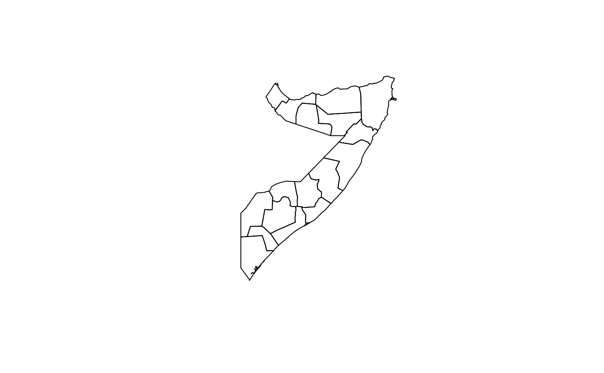
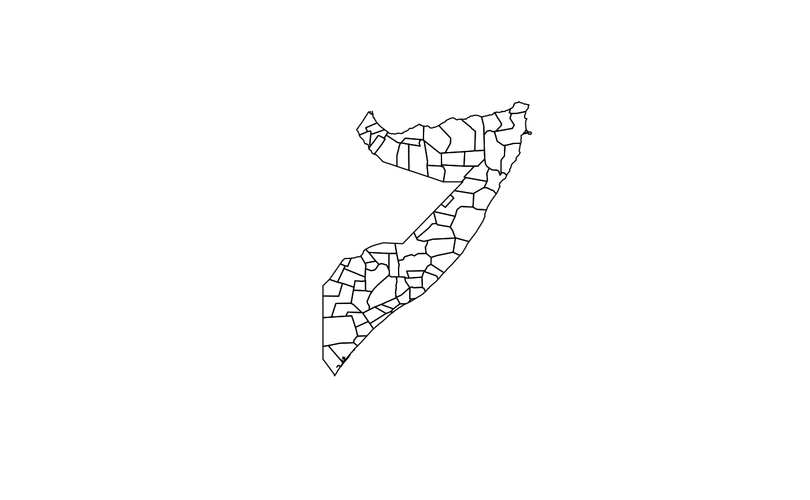
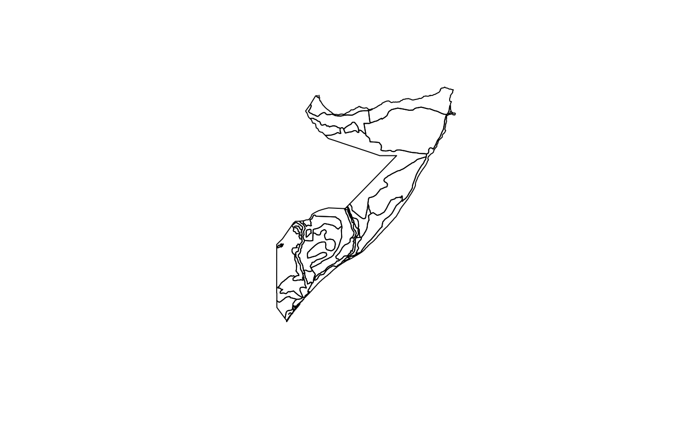
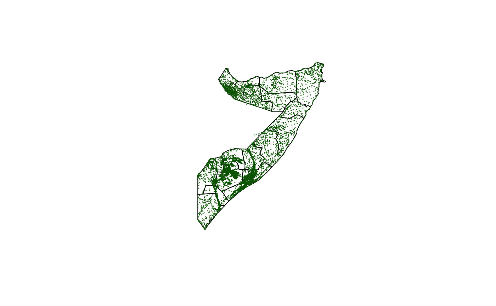

Designing surveys require relevant datasets to be used as basis for sample size calculations, sampling design, survey planning/logistics and survey implementation. These include datasets on population, lists of sampling clusters, map datasets for spatial sampling, and previous survey datasets that can be used for estimating indicator variance and design effects. This package contains relevant datasets for use in designing surveys in Somalia.
Installation
somalia is not yet released on CRAN.
You can install the development version of somalia from GitHub with:
if(!require(devtools)) install.packages("devtools")
install_github("validmeasures/somalia")Usage
The somalia package has the following datasets.
Somalia map datasets
Four map datasets are included in the somalia pacakge. These are:
Administrative level 1 or region map of Somalia (
district_map)Administrative level 2 or district map of Somalia (
region_map)Livelihood zones map of Somalia (
lhz2015)Villages (with geographical coordinates) of Somalia (
villages)
The administrative level 1 or region map, administrative level 2 or district map and livelihoods zones map of Somalia are provided as a dataset class SpatialPolygonsDataFrame. These datasets are taken from the Humanitarian Data Exchange in ESRI Shapefile format and then converted into SpatialPolygonsDataFrame.
The villages of Somalia with geographical coordinates dataset is provided by UNICEF Somalia.
Accessing area information from map datasets
Underlying area information for the regions, districts and livelihood zones of Somalia can be accessed from the SpatialPolygonsDataFrame as follows:
## Regions dataset
somalia::region_map@data#> OBJECTID admin1Name admin1Pcod admin1RefN admin1AltN admin1Al_1
#> 0 1 Awdal SO11 Awdal <NA> <NA>
#> 1 2 Bakool SO25 Bakool <NA> <NA>
#> 2 3 Banadir SO22 Banadir Banaadir <NA>
#> 3 4 Bari SO16 Bari <NA> <NA>
#> 4 5 Bay SO24 Bay <NA> <NA>
#> 5 6 Galgaduud SO19 Galgaduud Galgadud <NA>
#> 6 7 Gedo SO26 Gedo <NA> <NA>
#> 7 8 Hiraan SO20 Hiraan Hiiraan <NA>
#> 8 9 Middle Juba SO27 Middle Juba Jubbada Dhexe <NA>
#> 9 10 Lower Juba SO28 Lower Juba Jubbada Hoose <NA>
#> admin0Name admin0Pcod date validOn validTo Shape_Leng
#> 0 Somalia SO 2014/06/06 2017/04/05 <NA> 5.6593658
#> 1 Somalia SO 2014/06/06 2017/04/05 <NA> 6.6501524
#> 2 Somalia SO 2014/06/06 2017/04/05 <NA> 0.8642052
#> 3 Somalia SO 2014/06/06 2017/04/05 <NA> 12.2115799
#> 4 Somalia SO 2014/06/06 2017/04/05 <NA> 8.0841467
#> 5 Somalia SO 2014/06/06 2017/04/05 <NA> 9.0452721
#> 6 Somalia SO 2014/06/06 2017/04/05 <NA> 9.0406244
#> 7 Somalia SO 2014/06/06 2017/04/05 <NA> 7.1430734
#> 8 Somalia SO 2014/06/06 2017/04/05 <NA> 6.1970812
#> 9 Somalia SO 2014/06/06 2017/04/05 <NA> 11.3094875
#> Shape_Area
#> 0 1.31247932
#> 1 2.10193142
#> 2 0.01961927
#> 3 5.61837157
#> 4 3.57320792
#> 5 3.99755585
#> 6 3.66494234
#> 7 2.77319084
#> 8 1.52671358
#> 9 3.89202081## Districts dataset
somalia::district_map@data#> OBJECTID_1 admin2Name admin2Pcod admin2RefN admin2AltN admin2Al_1
#> 0 1 Banadir SO2201 Banadir <NA> <NA>
#> 1 2 Borama SO1101 Borama Boorama <NA>
#> 2 3 Baki SO1102 Baki <NA> <NA>
#> 3 4 Lughaye SO1103 Lughaye <NA> <NA>
#> 4 5 Zeylac SO1104 Zeylac Saylac <NA>
#> 5 6 Hargeysa SO1201 Hargeysa Hargeisa <NA>
#> 6 7 Berbera SO1202 Berbera <NA> <NA>
#> 7 8 Gebiley SO1203 Gebiley Gabiley <NA>
#> 8 9 Burco SO1301 Burco Burao <NA>
#> 9 10 Buuhoodle SO1302 Buuhoodle Buhodle <NA>
#> admin1Name admin1Pcod admin0Name admin0Pcod date validOn
#> 0 Banadir SO22 Somalia SO 2014/06/06 2017/04/05
#> 1 Awdal SO11 Somalia SO 2014/06/06 2017/04/05
#> 2 Awdal SO11 Somalia SO 2014/06/06 2017/04/05
#> 3 Awdal SO11 Somalia SO 2014/06/06 2017/04/05
#> 4 Awdal SO11 Somalia SO 2014/06/06 2017/04/05
#> 5 Woqooyi Galbeed SO12 Somalia SO 2014/06/06 2017/04/05
#> 6 Woqooyi Galbeed SO12 Somalia SO 2014/06/06 2017/04/05
#> 7 Woqooyi Galbeed SO12 Somalia SO 2014/06/06 2017/04/05
#> 8 Togdheer SO13 Somalia SO 2014/06/06 2017/04/05
#> 9 Togdheer SO13 Somalia SO 2014/06/06 2017/04/05
#> ValidTo Shape_Leng Shape_Area
#> 0 <NA> 0.8642052 0.01961927
#> 1 <NA> 2.4036976 0.25479842
#> 2 <NA> 2.8715734 0.28236041
#> 3 <NA> 2.3342717 0.27573735
#> 4 <NA> 3.8520475 0.49958315
#> 5 <NA> 4.5845553 1.12903713
#> 6 <NA> 5.0865557 0.84711370
#> 7 <NA> 2.5344524 0.35262137
#> 8 <NA> 5.2240354 1.32260622
#> 9 <NA> 2.9924082 0.55790595## Livelihoods zones dataset
somalia::lhz2015@data#> COUNTRY LZNUM LZCODE LZNAME CLASS
#> 0 SO 1 SO01 Guban Pastoral AN04
#> 1 SO 2 SO02 West Golis Pastoral SH01
#> 2 SO 3 SO03 Northwestern Agropastoral AG04
#> 3 SO 4 SO04 Togdheer Agropastoral CC01
#> 4 SO 5 SO05 Hawd Pastoral PS01
#> 5 SO 6 SO06 Northern Inland Pastoral Goats and Sheep AS06
#> 6 SO 7 SO07 East Golis Frankincense, Goats, and Fishing AS09
#> 7 SO 8 SO08 Coastal Deeh Pastoral and Fishing FS01
#> 8 SO 9 SO09 Addun Pastoral PS04
#> 9 SO 10 SO10 Cowpea Belt Agropastoral AG12Plotting map datasets
Map datasets can be mapped using the plot() function in the sp package. This is implemented as follows:
- Map of Regions of Somalia
sp::plot(somalia::region_map)
- Map of Districts of Somalia
sp::plot(somalia::district_map)
- Map of Livelihood Zones of Somalia
sp::plot(somalia::lhz2015)
- Map of villages of Somalia
sp::plot(somalia::region_map)
points(somalia::villages[ , c("longitude", "latitude")], pch = 20, cex = 0.1, col = "darkgreen")